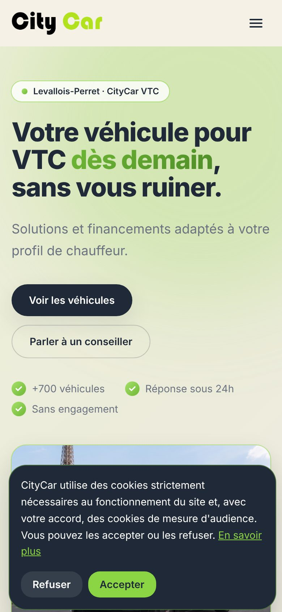

Tout ce que vous voyez ici
est né sur mon téléphone.
Mes logiciels, mes sites et mes vidéos : construits avec l'IA, depuis un smartphone.
46projets
130+vidéos
Un Samsung Galaxy Note 10. L'IA. Pas de bureau.
Michael Kebail-Ali
MON QUOTIDIEN D'ENTREPRENEUR AVEC L'IA